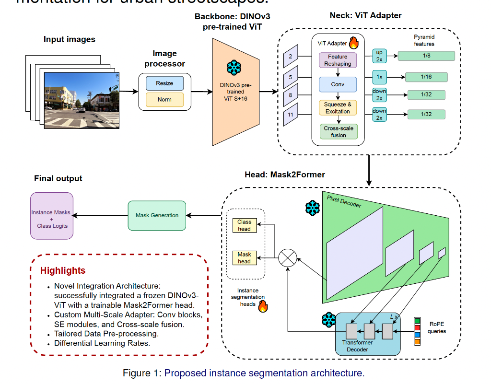

Project information
- Project name : Combining DINOv3 and Mask2Former for Urban Streetscapes Instance Segmentation
- Course : SSY340 – Deep Machine Learning (Chalmers University) View course details
- GitHub : Source code
- Authors : Yinghao Chen, Mohammad Albarham
- Year : 2025
- Report : Project Report (PDF)
- Poster : Project Poster (PDF)
Project overview
This project presents a unified instance segmentation framework (DINOv3-Mask2Former) for urban streetscapes, developed as part of the SSY340 – Deep Machine Learning course at Chalmers University of Technology. The model integrates a self-supervised Vision Transformer (DINOv3) backbone with a Mask2Former head via an enhanced ViT Adapter, forming a cohesive architecture that captures both global context and local details for robust segmentation of complex urban scenes.
Abstract
Experiments on the Mapillary Vistas dataset validate the feasibility of this approach, showing that DINOv3's transferable features can be adapted for structured urban scene understanding. The model achieves strong instance segmentation performance on large objects while identifying key challenges in small and occluded instance recognition, underscoring the potential of self-supervised transformers for scalable urban perception.
Architecture

Figure 1: Proposed instance segmentation architecture.
- Backbone: Frozen DINOv3 pre-trained ViT-S16 extracts rich, transferable visual features.
- Neck (ViT Adapter): Custom multi-scale adapter with Conv blocks, Squeeze & Excitation modules, and cross-scale feature fusion to produce pyramid features at 1/8, 1/16, and 1/32 scales.
- Head (Mask2Former): Trainable pixel decoder and mask/class heads for generating instance masks and class logits.
Dataset
Trained and evaluated on the Mapillary Vistas dataset — a large-scale benchmark with 25,000 high-resolution street-level images collected worldwide. The project focused on 12 instance-level classes including Person, Car, Truck, Bus, Bicycle, Motorcycle, Traffic Sign, Street Light, Pole, Crosswalk, Driveway, and Bicyclist.
Key highlights
- Novel integration of a frozen DINOv3-ViT backbone with a trainable Mask2Former head.
- Custom multi-scale ViT Adapter with Squeeze & Excitation for cross-scale feature fusion.
- Strong performance on large urban objects (vehicles, buildings).
- Identified key challenges in small and occluded instance recognition.
- Demonstrates the potential of self-supervised transformers for scalable urban perception tasks.
Technologies
- PyTorch
- DINOv3 (Self-supervised Vision Transformer)
- Mask2Former
- ViT Adapter
- HuggingFace Transformers
- Mapillary Vistas Dataset